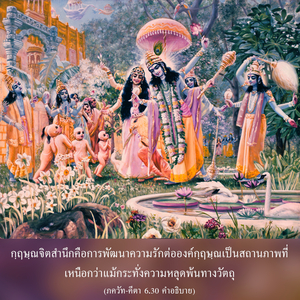

สำหรับผู้ที่เห็นข้าทุกหนทุกแห่ง และเห็นทุกสิ่งทุกอย่างในข้า ข้าไม่เคยหายไปจากเขา และเขาก็ไม่เคยหายไปจากข้า



บุคคลในกฺฤษฺณจิตสำนึกเห็นองค์ศฺรีกฺฤษฺณอยู่ทุกหนทุกแห่งอย่างแน่นอน และเห็นทุกสิ่งทุกอย่างในองค์กฺฤษฺณ บุคคลเช่นนี้อาจดูเหมือนว่าเห็นปรากฏการณ์ที่แยกจากกันทั้งหมดของธรรมชาติวัตถุ แต่ในทุกๆ โอกาสเขาจะมีจิตสำนึกขององค์กฺฤษฺณ และทราบว่าทุกสิ่งทุกอย่างเป็นปรากฏการณ์แห่งพลังงานของพระองค์ ไม่มีอะไรสามารถอยู่ได้โดยปราศจากองค์กฺฤษฺณ และองค์กฺฤษฺณทรงเป็นองค์ภควานฺของทุกสิ่งทุกอย่าง นี่คือหลักธรรมพื้นฐานของกฺฤษฺณจิตสำนึก กฺฤษฺณจิตสำนึก คือ การพัฒนาความรักต่อองค์กฺฤษฺณ เป็นสถานภาพที่เหนือกว่า แม้กระทั่งความหลุดพ้นทางวัตถุ ในระดับของกฺฤษฺณจิตสำนึกที่เหนือกว่าความรู้แจ้งแห่งตนนี้ สาวกจะกลายเป็นหนึ่งเดียวกับองค์กฺฤษฺณ ในความรู้สึกที่ว่า องค์กฺฤษฺณทรงกลายมาเป็นทุกสิ่งทุกอย่างสำหรับสาวก และสาวกมีความเปี่ยมล้นไปด้วยความรักต่อองค์กฺฤษฺณ ความสัมพันธ์อันใกล้ชิดสนิทสนมระหว่างองค์ภควานฺ และสาวกจึงเกิดขึ้น ในระดับนั้นสิ่งมีชีวิตไม่มีวันถูกทำลาย และองค์ภควานฺทรงไม่เคยคลาดไปจากสายตาของสาวก การกลืนหายเข้าไปในองค์กฺฤษฺณเป็นการทำลายดวงวิญญาณ สาวกจะไม่เสี่ยงที่จะทำเช่นนั้น กล่าวไว้ใน พฺรหฺม-สํหิตา (5.38) ว่า
เปรมาญชะนะ-จฉุริตะ-ภักติ-วิโลจะเนนะ
สันตะห์ สะไทวะ หฤทะเยษุ วิโลกะยันติ
ยัม ศยามะสุนทะรัม อะจินตยะ-คุณะ-สวะรูปัม
โควินทัม อาทิ-ปุรุษัม ตัม อะหัม ภะชามิ
“ข้าขอบูชาพระผู้เป็นเจ้าองค์แรก โควินฺท ผู้ที่สาวกมองเห็นด้วยดวงตาที่ชโลมไปด้วยเยื่อใยแห่งความรักตลอดเวลา สาวกเห็นพระองค์ในรูปอมตะแห่ง ศฺยามสุนฺทร ผู้ทรงสถิตภายในหัวใจของสาวก”
ในระดับนี้องค์ศฺรีกฺฤษฺณทรงไม่มีวันคลาดสายตาไปจากสาวก และสาวกก็จะไม่คลาดสายตาไปจากพระองค์ ในกรณีที่โยคีเห็นองค์ภควานฺในรูป ปรมาตฺมา ผู้ทรงประทับอยู่ภายในหัวใจก็เช่นเดียวกัน โยคีผู้นั้นจะกลายมาเป็นสาวกผู้บริสุทธิ์ และทนไม่ได้ที่จะมีชีวิตอยู่แม้แต่นาทีเดียว โดยที่ไม่ได้เห็นพระองค์ทรงประทับอยู่ในตนเอง